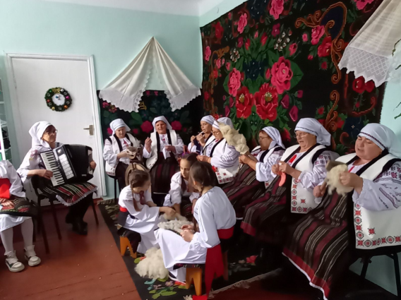

Ansamblul folcloric ,,DATINA”, s. Fîrlădeni, r-l Căușeni
Conducător: Cucovici Antonina
Acompaniment: Ceban Larisa
1. Colectivul ansamblului folcloric ,,DATINA” a fost înființat în primăvara anului 2017, în cadrul implementării proiectului ,,Comunicarea prin tradiții populare...”.
2. Ansamblul folcloric ,,DATINA” a fost menționat cu diplome de merit pentru participare activă în promovarea tradițiilor naționale la festivalurile locale și raionale, precum:
- Sărbătoarea ,,Ziua Națională a Vinului”, Căușeni, 15 octombrie 2017.
- Festivalul cântecului pascal și a expoziției cu genericul ,,HRISTOS A ÎNVIAT”, Căușeni 2018.
- „Din zestrea neamului, tradiții vechi și noi” Ediția I - „LA HUȘCĂ ÎN COȘCALIA”, satul Coșcalia, r-l Căușeni, 7 iulie 2018.
- Festivalul cu genericul „PREACURATĂ-I FAȚA PÂINII...” Ediția a IV – 2018, s. Taraclia, r-l Căușeni.
- 1 decembrie 2018, Ziua națională a României; orașul Balan județul Harghita, România.
- Festivalul cu genericul „PREACURATĂ-I FAȚA PÂINII...” Ediția a VII – 2022, s. Taraclia, r-l Căușeni.
- Festivalul cu genericul „TOAMNA DE CHIHLIMBAR”, Căușeni 2022.
- Ansamblul folkloric Datina în parteneriat cu IPÎ L.T., „M.Sadoveanu”, la o activitate unde a avut loc Campania „te vezi realizat acasă” implementată de Atelierul de producție video și educație media TeVezi în cadrul proiectului „Joboteca” program pilot de pregătire a tinerilor din Moldova pentru piața muncii 2021-2024. Implementat de Terre des homes România și Terre des homes Moldova în parteneriat cu MEC al RM și finanțat de UE.
- Semn de gratitudine colectivul ansamblului folcloric „DATINA” din satul Fîrlădeni, pentru colaborarea sinceră manifestată constant pe parcursul anilor, cultivând obiceiurile și tradițiile naționale prin participarea la festivalul cântecului pascal „HRISTOS A ÎNVIAT”, 18 aprilie 2023, Căușeni.
- Festivalul „La seceriș”, satul Cîrnățeni raionul Căușeni, 30 iulie 2023.
- Festivalul cu genericul „TOAMNA DE CHIHLIMBAR”, Căușeni 2023.
3. O mică prezentare a localității Fîrlădeni.
Mândri că au un sat mare și frumos, cu dealuri înverzite, cu oameni harnici și gospodari. În zilele obișnuite dis-de-dimineață clocotește satul, unde munca e în toi. În zi de sărbătoare stă mândru, căci în el răsună cântecul și dansul cu tradiții și obiceiuri moștenite din bărâni pe care le transmit mai departe celor tineri. Locul natal este mereu o sursă de dragoste și de admirație pentru fiecare dintre noi.
.png)